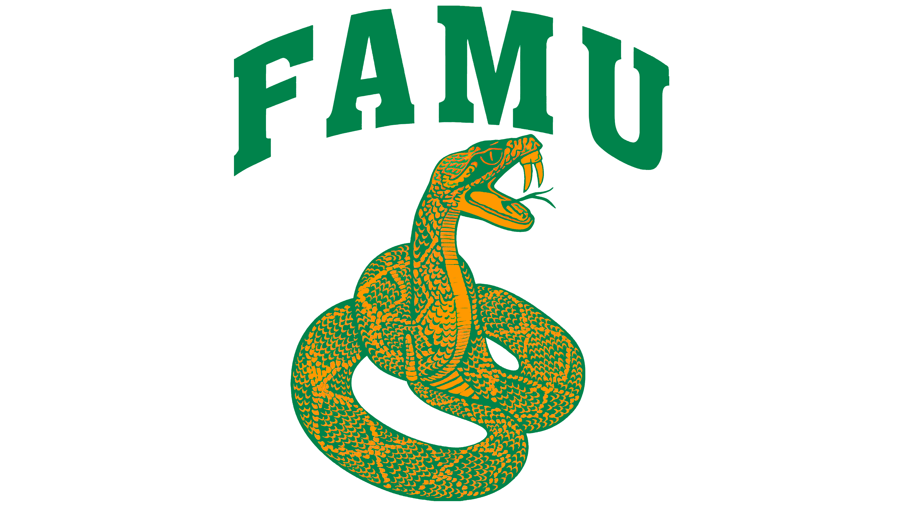

My name is Malachi White. I am 21 years old, and I was born in Portland, Oregon, and was raised in Tulsa, Oklahoma. I am a Junior studying Computer Information Systems at Florida A&M University. When I was younger, I played basketball all my life, my cousins played in the NBA, and I was good at basketball myself. So naturally, I wanted to go to the NBA; I ended up going to college in Louisiana for basketball. But after Covid-19, I walked away from the game and started my new path, coding!
I started coding around two years ago, and I just fell in love with how everything had to work together. I loved the critical thinking aspect of using data structures and learning OOP and algorithms. It seemed as if ever since I started coding, I have become more intelligent because I see different ways coding and computers interact with the real world. I have been learning C#, Python, C, and C++ while using Angular and .NET Framework.
The reason why I came to FAMU was for the excellent opportunity to be able to learn, network, and develop my skills as a future C# and Software Engineer.
I hope you enjoy exploring my page, through out my page you will see a wide verity of things I love to do ranging from film production, athletics, and coding. Here it shows my wide verity of skills that I have acquired through out the years. At the end of the page please feel free to contact me with any types of oppurtunitys.
| Favorite Basketball Teams | Places I want to travel | Favorite Food | Favorite video games | Favorite movies | Top 5 Goals |
|---|---|---|---|---|---|
| 1.Los Angles Clippers | 1.London | 1.Spaghetti | 1.Apex | 1.Interseller | 1.Finish School and get my bachloers in Computer Infromation Systems |
| 2.Portland TrailBlazers | 2.Paris | 2.Sushi | 2.Dead By Daylight | 2.Forest Gump | 2.Create my own software and develop and manufacture wepons |
| 3.Spurs | 3.Egypt | 3.Duck | 3.Star Wars the Old republic | 3.Friday | 3.Have a sucessul bussniess and a brand |
| 4.Oklahoma City Thunder | 4.Tokyo | 4.Deer | 4.Call of Duty | 4.Gone | 4.Have a Family |
| 5.Boston Celtics | 5.Mars | 5.Steak | 5.Super Smash Brothers | 5.Avengers Age of Ultron | 5.Be a greater intavator then Elon Musk |